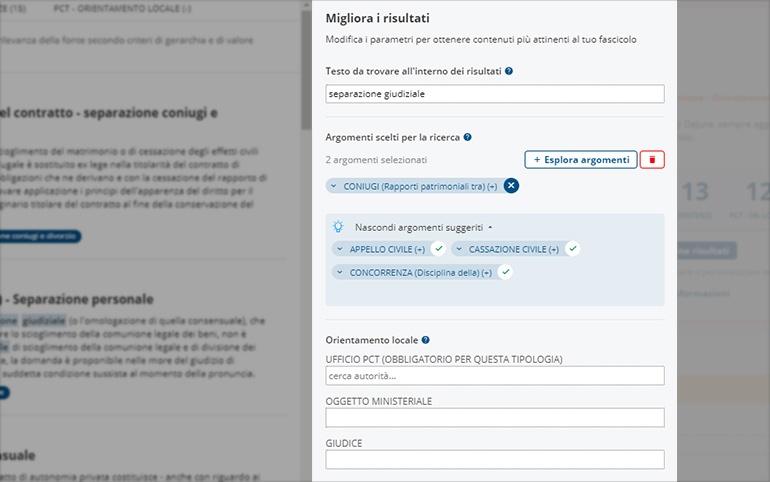
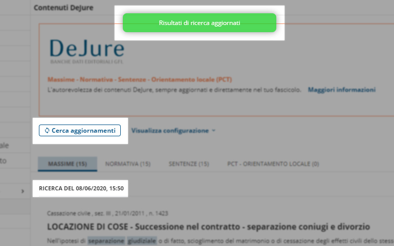
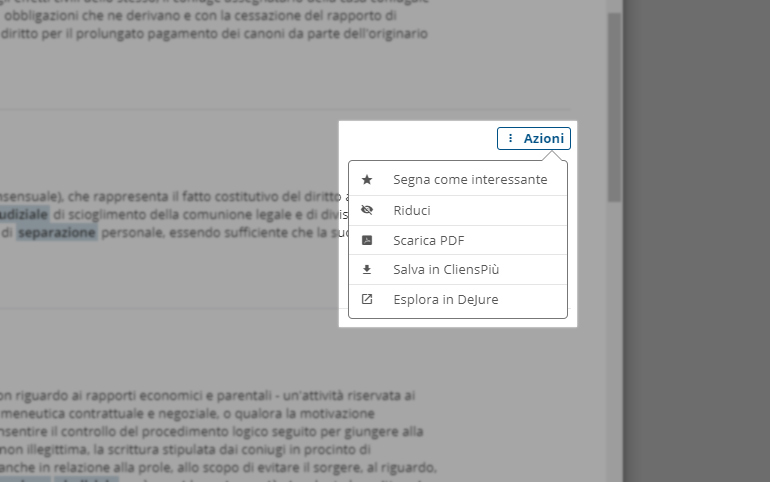

Una selezione di contenuti nel tuo Fascicolo
Da oggi CliensPiù ti offre una selezione di contenuti provenienti da DeJure – la banca dati editoriale GFL – attinenti al tuo fascicolo e consultabili direttamente all’interno del software.
Ricerca a partire dal tuo fascicolo
Avviando una semplice ricerca basata sull’oggetto del tuo fascicolo, potrai consultare i 15 contenuti più qualificati degli archivi MASSIME, SENTENZE, NORMATIVA e le sentenze provenienti dal PCT in ORIENTAMENTO LOCALE.

Migliora i risultati della tua ricerca
Potrai modificare le parole chiave e verificare che gli argomenti legati alle fonti associate alla tua ricerca siano corretti, oltre a verificare i parametri per l'orientamento locale.
Aggiornando i risultati potrai trovare l'impostazione più in linea con le tue esigenze.

Monitora le novità
Dalla sezione "Contenuti DeJure" del tuo fascicolo potrai verificare in ogni momento la presenza di nuovi contenuti inerenti alla tua ricerca e rimanere sempre aggiornato sulle novità.

Lavora sui contenuti trovati
Potrai organizzare il materiale trovato marcandolo come "interessante", salvarlo tra i documenti di CliensPiù o direttamente nel tuo computer.
Inoltre, se sei un cliente DeJure, potrai continuare la tua ricerca in Banca Dati con un semplice clic, beneficiando di tutti i contenuti correlati e provenienti da altri archivi.